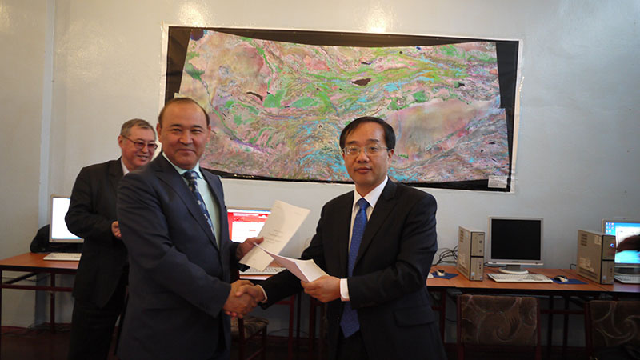
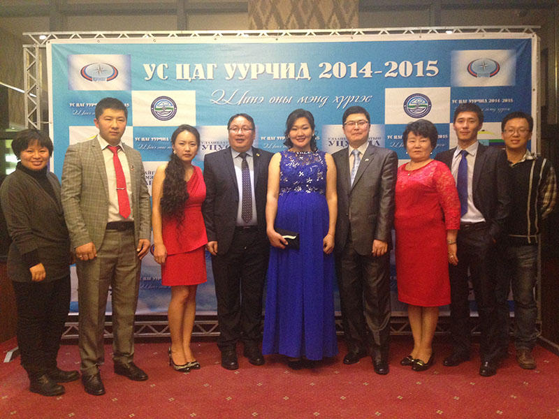
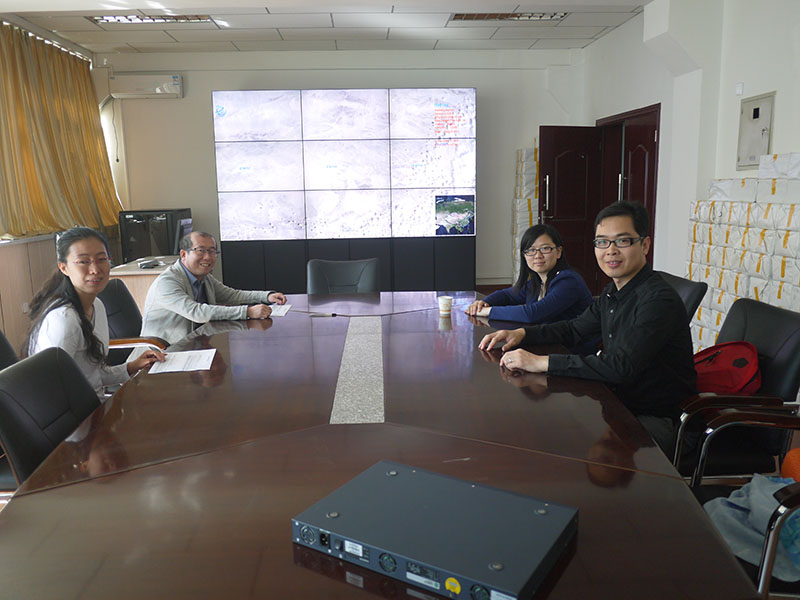
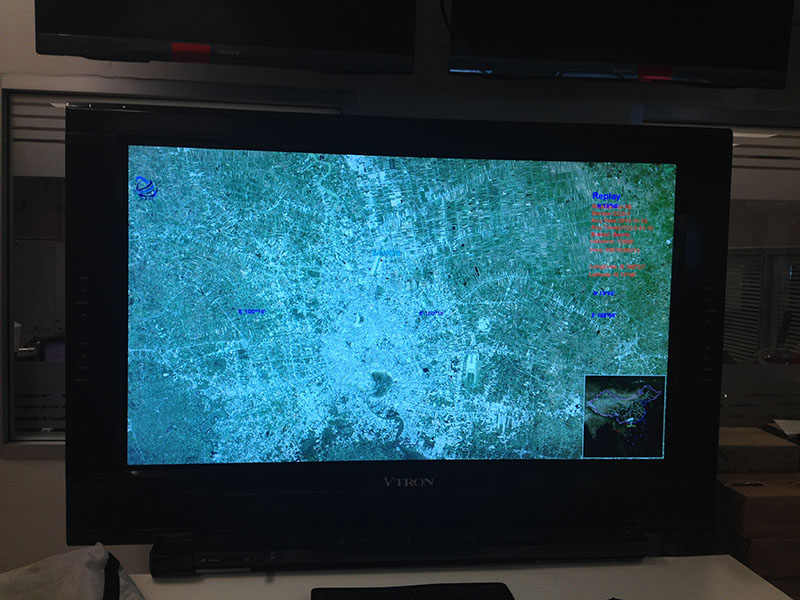
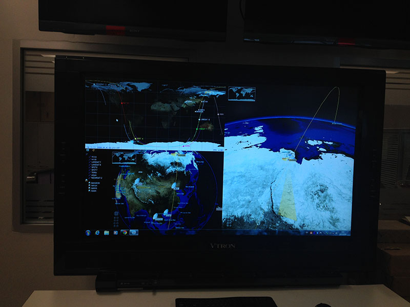
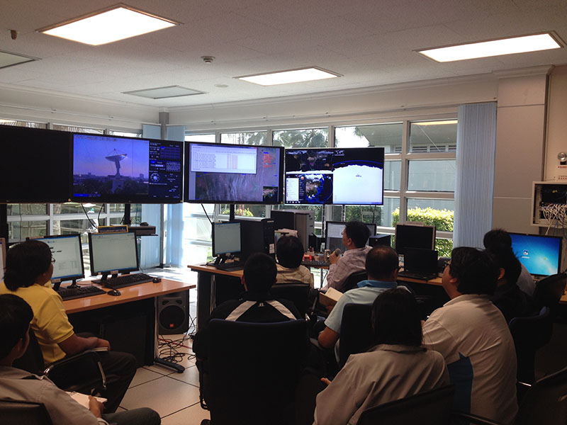

SatSee服务地图
我们的SatSee系统已经在全国十多家单位以及国外多个机构上安装运行。这个网页描述了目前已有的用户，以及我们目前正在开展的用户拓展工作。
(这也是和地图一起讲故事(StoryMap)的一个例子，你可以点击文章的任意位置来驱动地图移动，也可以点击地图上的图标来驱动文章重定位)
中国科学院上海技术物理研究所
技物所是很多国产卫星上传感器的生成商

广州中国海洋局南海分局
用户希望通过Satsee系统更及时的获取南海周边的卫星数据
吉尔吉斯坦比什凯克
吉尔吉斯斯坦物理与技术研究院

赴蒙古乌兰巴托
蒙古环境信息中心

和比利时VITO公司签订合作协议交换数据
RADI Signs MOU with VITO for Cooperation on Satellite Quicklook Data
An MoU is signed between Institute of Remote Sensing and Digital Earth (RADI), Chinese Academy of Sciences (CAS) and Institute of Vision on Technology (VITO), Belgium on April 29 in Mol, Belgium for satellite quicklook data exchange cooperation.
Prof. Liu Jianbo, Deputy Director of RADI signed the MoU on behalf of RADI with Prof. Dirk Fransaer, Managing Director of VITO during his visit to Belgium from April 27-30.
According to the MoU, RADI will provide a Virtual Ground Station (SatSee System), along with three satellites quicklook data service, to VITO, and VITO will provide PROBA-V satellite quicklook data to RADI.
RADI initiated and developed a system called SatSee. It is able to provide users with near real-time, full resolution quicklook images of remote sensing satellite data. SatSee system combines the various advantages that RADI has in the field of satellite remote sensing, including the abundant satellites RADI receives, wide coverage area of its station net, high-speed fiber link between station and processing center, and high computing capacities. The data supported by SatSee now are Chinese HJ-1A, HJ-1B (more will be added soon) and USA Landsat-8. Through the quicklook data exchange, RADI and VITO can not only quickly access satellite data from each other, but also get the satellite data promoted to third party through SatSee quicklook data service. With more data available and quicker, easier access, this service mode is expected to contribute to some emergency monitoring needs.
PROBA-V is a small satellite initiated by ESA and Belspo, with 100 m resolution at nadir, 350 m on full field of view, bands specially designed for vegetation monitoring. VITO is responsible for its data processing and user segment operation.
HJ-1A and HJ-1B are Chinese small satellites with 30 m resolution and 720 km swath.

The RADI-VITO MoU being signed.

The SatSee system displaying PROBA-V satellite quicklook in VITO
新疆维吾尔自治区科技发展战略研究院购置了SatSee系统（点击我看看）
在柬埔寨为吴哥窟管理局安装SatSee系统（点击我看看）
RADI and HIST Sign MOU with Cambodian APSARA to Provide China’s Satellite Quicklook Data Service
An MOU is signed between the Institute of Remote Sensing and Digital Earth (RADI), Chinese
Academy of Sciences (CAS), the International Centre on Space Technologies for Natural and
Cultural Heritage under the auspices of UNESCO (HIST), and the Authority for the Protection and
Management of Angkor and the Region of Siem Reap (APSARA) on September 9 in Siem Reap for
cooperation in the use of Satellite Quicklook data from China.
Prof. LIU Jianbo, deputy director of RADI, and Prof. HONG Tianhua, deputy director of HIST, on
behalf of RADI and HIST respectively, signed the MOU with Dr. Peou HANG, deputy director of
APSARA, Cambodia. The signing ceremony was witnessed by some 30 people including Prof. LI
Jinghai, CAS Vice President, Mr. CAO Jinghua, deputy director general of CAS Bureau of
International Cooperation, and N. Bun, director general of APSARA. Cambodian Deputy Prime
Minister Dr. Sok An met the delegation from CAS on September 10 at the Council of Ministers. He
highly praised the cooperation between two sides.
According to the MOU, RADI will provide a Virtual Ground Station (SatSee System) and the
quicklook data service of two satellites to APSARA. With the help of RADI engineers, the system
has been installed on September 5. After being connected via internet, the system has started to
receive near real-time, full resolution satellite quicklook images provided by RADI.
RADI initiated and developed the SatSee system. It is able to provide users with near real-time,
full resolution quicklook images of remote sensing satellite data. SatSee system combines the
various advantages that RADI has in the field of satellite remote sensing, including the
abundant satellites RADI receives, wide coverage area of its station net, high-speed fiber link
between station and processing center, and high computing capacities.
The data supported by SatSee now are Chinese HJ-1A, HJ-1B (more will be added soon), USA
Landsat-8 and Belgium’s PROBA-V. With more data available and quicker, easier access, this
service mode is expected to contribute to emergency monitoring needs such as the monitoring of
ecosystem, flood, fire, and oil spill disasters.
As the system doesn’t need an antenna to be built on the users’ side, it can be obtained and
operated at very low cost, and therefore can be easily promoted and applied in the developing
countries. Chinese neighboring countries in Central Asia and South East Asia, over which RADI
receiving facilities cover, benefit most. Cambodia is the third country which signed the
agreement and benefits from the satellite quicklook data service. Thailand, Mongolia, and
Australia also show interest in the system. RADI plans to provide such service to more countries
soon.
The RADI-HIST-APSARA MOU being signed.
Dr. Sok An meets with CAS delegation.
在泰国安装SatSee系统（点击我看看）
在GISTDA的接收站以及办公总部安装了三套SatseeLive和SatseeOrbit软件，颇受好评。

